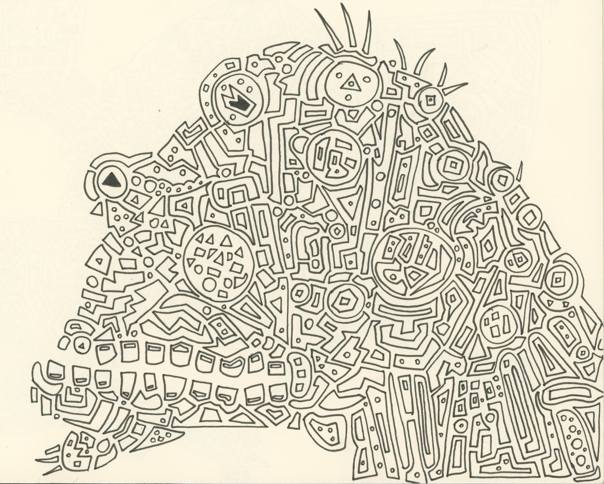
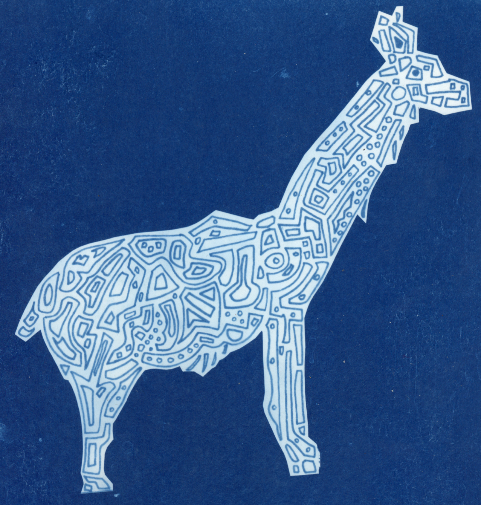
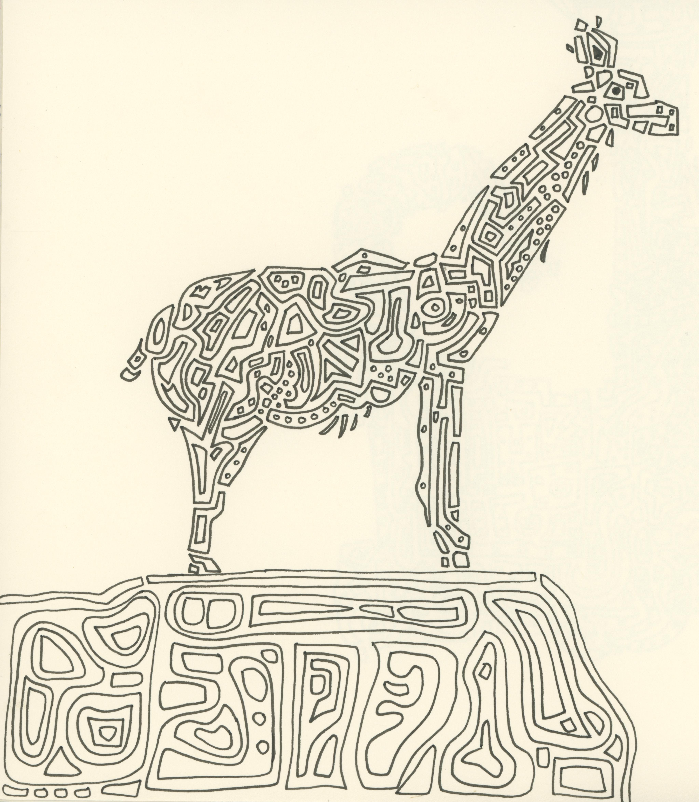

A style of illustration I have been working on since I started taking drawing more seriously are these geometric animals. I start drawing shapes on a piece of paper making sure that each one connects directly to other shapes. I rotate the paper multiple times as the drawing progresses. Eventually an abstract animal shape appears in my minds-eye and I take the drawing in that direction. This is similar to looking at cloud shapes and coming up with animals or objects that they look like. When I start a new sketchbook, I always do one of these animals on the first page as a way to break in the book and never delay in starting a new book.
Recently, I learned how to do cyanotype prints. The technique has been around since the 1840’s for making prints and helped to advance highly technical drawings (blue prints) for relatively cheap. The basic idea is that there is a chemical reaction with a paper that is coated in a UV reactive iron compound. When exposed to UV, the compound oxidizes and turns a deep blue. If part of the exposed area is covered and blocks the UV, that part will not oxidize and show up as white.
In the above illustration of the ape, I scanned the image and digitally inverted the image. The black pen shapes became white and the white background of the paper became black. I printed this out on a transparency sheet with an inkjet printer. This is my negative image that I can make endless cyanotype prints with.
I coated some pieces of paper with cyanotype chemical mixture (Potassium Ferricyanide and Ammonium Citrate) in a dark room using the red light of a head lamp. Once they were dry, I fit the ape negative print over the paper and sandwiched it between a board and some thin plexiglass using clamps. I placed the prints in the sun for 15 minutes. If you go too long it will overexpose the image and the lines will not be as crisp. You then stop the reaction by dumping some hydrogen peroxide on the print and then do several washes with clean water to remove any excess reactive compounds.
The final prints look like below:

The print is overexposed in some areas. There are a number of variables to play with here including the paper type, the prep of the chemical coating, the exposure time, how rapid you do the hydrogen peroxide and water washes etc.
This geometric llama is one of the best prints as far as process goes. The space between the lines are a bit thicker in the original image making it easier for the negative image to only expose the lines:

For comparison, here is the original illustration. I cut out the cliff to simplify the image and make the negative smaller for the cyanotype.
